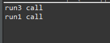

[Java] 21. アノテーション(Annotation)を使う方法
こんにちは。明月です。
この投稿はJavaのアノテーション(Annotation)を使う方法に関する説明です。
Javaのアノテーション(Annotation)とはクラスやメソッド、変数なのでメタデータ、データの定義を設定するデータという意味です。
つまり、アノテーションのデータはプログラム実装では影響がなくて、クラスやメソッド、変数を区分するためのデータだと言えます。
アノテーションはアットマーク(@)を利用して設定することができます。
// ラムダ式のインタフェースを設定するアノテーション
// メソッドを二つ以上に作ったらコンパイル側でエラーが発生する。
@FunctionalInterface
// インターフェース
interface LambdaExpression{
// 抽象メソッド
void run();
}
// クラス
class Example {
// 再定義のアノテーション(Objectから継承)
@Override
public String toString() {
return "Hello world";
}
// 使用禁止というアノテーション
// 呼び出すことの実装したらWarning表示する。
@Deprecated
public void print() {
System.out.println("print");
}
// 設定されているスタック領域でWarningをなくすアノテーション
@SuppressWarnings("unused")
public void test() {
int aaa = 0;
}
}
Javaでよく使うアノテーションはOverride、Deprecatedがあります。
Overrideはクラスを継承して再定義する時に設定するアノテーションです。Deprecatedはメソッドを削除すると既存に継承したクラスでエラーが発生するため、メソッドを削除もできなくて、ただ使用をお勧めしないのことをお知らせする時に使うアノテーションです。
@FunctionalInterfaceのアノテーションを使ったインタフェースは関数を二つに作成するとエラーが発生することを確認できます。
printの関数は取り消し線があります。@Deprecatedのアノテーションの影響で関数を呼び出すことをすればWarningメッセージが表示します。 testの関数はint aaa=0;がありますが、@SuppressWarningsが無ければ、unusedのWarningメッセージが出ます。
上のことはJavaで提供するアノテーションです。アノテーションは開発者が作成することもできます。
import java.lang.annotation.ElementType;
import java.lang.annotation.Target;
// クラスで使うアノテーション設定
@Target(ElementType.TYPE)
// アノテーション設定
@interface TestClassAnnotaion {
// アノテーション属性(valueは属性設定省略が可能)
public String value();
}
// メソッドで使うアノテーション設定
@Target(ElementType.METHOD)
// アノテーション設定
@interface TestMethodAnnotaion {
// アノテーション属性
public String name() default "no name";
}
// 変数で使うアノテーション設定
@Target(ElementType.FIELD)
// アノテーション設定
@interface TestVariableAnnotaion {
// アノテーション属性 (valueでもないし、default値が設定されてないなら、必須要求属性になる。)
public String name();
}
//実行クラス
public class Example {
// クラスにアノテーション設定
@TestClassAnnotaion("test")
class Node {
// メソッドにアノテーション設定
@TestMethodAnnotaion(name = "print")
public void print() {
// コンソールに出力
System.out.println("Hello world");
}
}
// 変数にアノテーション設定(name属性は必須)
@TestVariableAnnotaion(name = "node")
private Node node = null;
// コンストラクタ
public Example() {
// Nodeインスタンスを生成
node = new Node();
// print関数を呼び出す。
node.print();
}
// 実行関数
public static void main(String... args) {
// インスタンスを生成
new Example();
}
}
アノテーションはプログラム実行することでは影響がありません。ただ、メタデータとして様々なクラスと関数、変数を区分するための情報として使うことができます。
アノテーションを生成する時に、@Targetアノテーションは使う区分を設定、@Retentionは設定するポジションを設定することができます。
| タイプ | 説明 |
|---|---|
| @Target | |
| TYPE | クラス、インタフェース、enumなどに設定 |
| FIELD | メンバー変数に設定 |
| METHOD | メソッドに設定 |
| PARAMETER | 関数のパラメータに設定 |
| CONSTRUCTOR | コンストラクタに設定 |
| LOCAL_VARIABLE | ロカール変数に設定 |
| ANNOTATION_TYPE | アノテーションに設定 |
| PACKAGE | パッケージに設定 |
| TYPE_PARAMETER | ジェネリックタイプに設定 |
| PACKAGE | すべてのところで設定可能 |
| @Retention | |
| SOURCE | ソース上だけ使うメタデータ情報。 |
| CLASS | .classファイルにはあるが、Runtime(実行中)には見えない。 |
| RUNTIME | Runtime(実行中)にも参照可能。 Reflectionを通ってクラスやメソッド区分ができます。 |
その以外に@inheritedの設定はクラスを継承する時にアノテーションメタデータ情報も継承するという意味です。@DocumentedはJava docを生成する時にメタデータ情報を含めるというアノテーション情報です。
私の個人の考えはReflection機能ではなければ別にアノテーションを使うことがないと思います。Reflectionでアノテーションをよってクラスを探索やメソッドを探索することが必要なので、それのためには必要です。
import java.lang.annotation.ElementType;
import java.lang.annotation.Retention;
import java.lang.annotation.RetentionPolicy;
import java.lang.annotation.Target;
import java.lang.reflect.Method;
// メソッドで使うアノテーション設定
@Target(ElementType.METHOD)
// Reflectionで認識するアノテーション
@Retention(RetentionPolicy.RUNTIME)
// アノテーション設定
@interface CallMethod {
// アノテーション属性
public String name() default "no name";
}
// クラス
class Example {
// Runtimeアノテーション設定
@CallMethod
public void run1() {
// コンソールに出力
System.out.println("run1 call");
}
// アノテーション設定しない
public void run2() {
// コンソールに出力
System.out.println("run2 call");
}
// Runtimeアノテーション設定
@CallMethod
public void run3() {
// コンソールに出力
System.out.println("run3 call");
}
// 実行関数
public static void main(String[] args) throws Throwable {
// インスタンスを生成
Example ex = new Example();
// Reflectionでメソッドを検索
for(Method method : ex.getClass().getMethods()) {
// CallMethodのアノテーションを取得
CallMethod anno = method.getAnnotation(CallMethod.class);
// 設定しなければnullになる。
if(anno != null) {
// CallMethodがあるメソッドを実行する。
method.invoke(ex);
}
}
}
}

上の例をみればReflectionでアノテーションが設定している関数だけ呼び出すことができます。
つまり、アノテーションでStrategyパターン(戦略パターン)、facade patternパターンを実装することができます。
その以外にEclipseみたいにIDEツールやJankinsのCIツールなどで使うためのアノテーションです。
ただ、コメントとしてアノテーションを作成するのは逆にソースの可読性を悪くなることがあるので、コメントと区分して使えばよいと思います。
ここまでJavaのアノテーション(Annotation)を使う方法に関する説明でした。
ご不明なところや間違いところがあればコメントしてください。
- [Java] 28. 文字タイプ(CharacterSet)とエンディアン(endian)で変換する方法2019/09/17 20:22:02
- [Java] 27. ネットワーク通信(Socket)をする方法2019/09/16 23:42:46
- [Java] 26. ファイル(IO)を扱う方法(ファイル作成、ファイル修正、アクセス日付変更とIOをclose(リソース返却)する理由、Closableインタフェース)2019/09/13 20:03:58
- [Java] 25. Objectクラス(notify、waitの使い方)2019/09/13 00:58:31
- [Java] 24. Javaの同期化(Synchronized)とデッドロック(Deadlock)2019/09/11 23:06:09
- [Java] 23. スレッドプール(Threadpool)を使う方法2019/09/10 21:55:36
- [Java] 22.スレッド(Thread)を使う方法2019/09/06 22:30:49
- [Java] 21. アノテーション(Annotation)を使う方法2019/09/05 22:58:20
- [Java] 20. iterator(for-each)とStream APIを使う方法2019/09/04 20:11:28
- [Java] 19. ラムダ(Lambda)を使う方法2019/09/03 20:37:14
- [Java] 18. 匿名クラス(Anonymous class)とクロージャ(closure)2019/09/02 20:30:34
- [Java] 17. ジェネリックタイプ(Generic type)を使う方法2019/08/27 19:05:44
- [Java] 16. 例外処理(try~catch~finally, throw)を使う方法2019/08/26 23:40:29
- [Java] 15. 列挙型(バイナリデータビット演算子の使用例)2019/08/23 19:46:10
- [Java] 14. オブジェクト指向プログラミング(OOP)の4つ特性(カプセル化、抽象化、継承、多相化)2019/08/22 20:08:37
- [Design pattern] 3-1. ストラテジーパターン(Strategy pattern)2021/11/03 18:38:52
- [C#] 60. ウィンドウフォーム(Window form)のイベント設定する方法2021/11/02 21:18:08
- [Design pattern] 2-7. ファサードパターン(Facade pattern)2021/11/02 19:32:31
- [Design pattern] 2-6. プロキシパターン(Proxy pattern)2021/11/01 19:42:44
- [Design pattern] 2-5. フライウェイトパターン(Flyweight pattern)2021/10/29 19:48:27
- [C#] 59. ウィンドウフォーム(Window form)にコントロール(Control)を使い方法2021/10/29 19:45:43
- [Design pattern] 2-4. デコレーターパターン(Decorator pattern)2021/10/28 20:11:13
- [C#] 58. ウィンドウフォーム(Window form)を作成する方法、そしてウィンドウメッセージとキュー2021/10/27 20:35:44
- [Design pattern] 2-3. ブリッジパターン(Bridge pattern)2021/10/27 20:32:21
- [Design pattern] 2-2. コンポジットパターン(Composite pattern)2021/10/27 20:30:54
- [Design pattern] 2-1. アダプターパターン(Adapter pattern)2021/10/26 19:12:40
- [Project design] プログラム最終テスト - ST(System test(Standard, Scenario))2021/10/26 19:10:07
- [Project design] プログラム結合テスト - IT(Integration test)2021/10/25 20:12:17
- [Python] Seleniumライブラリを使う方法(自動ウェブテスト、ウェブスクレイピング)2021/10/25 19:29:00
- [Design pattern] 1-5. プロトタイプパターン(Prototype pattern)2021/10/22 19:35:45